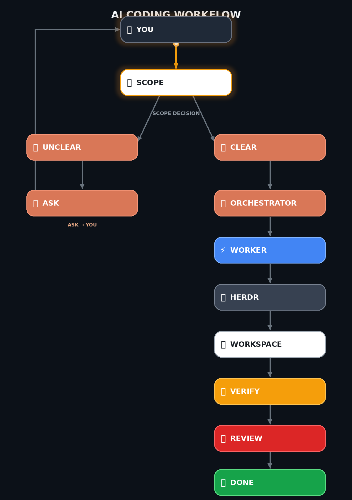

Use Claude Code as the high-level brain. Let Herdr manage persistent terminal panes. Dispatch heavy coding to agy, codex, or any CLI agent — with stateful task tracking, git worktree isolation, and diff-based review.
Decouple cognitive orchestration from heavy execution. Every agent has a clear, non-overlapping responsibility.
Reads the user goal, decomposes complex tasks into discrete jobs, prepares briefings, coordinates workers, and makes high-level decisions.
Maintains persistent terminal panes, process lifecycle tracking (idle / working / blocked / done), and exposes CLI/Socket automation.
agy, codex, or any CLI agent runs in isolated git worktrees. A dedicated reviewer evaluates actual git diffs, not self-reports.

Designed from empirical battle testing on real coding tasks. No blind trust, no race conditions, no unverified claims.
Drive agy, codex, gemini, or any Herdr-supported kind through the exact same unified interface with per-kind native argument tuning.
Every task is saved in .agents/tasks/TASK-xxx.json. If Claude restarts or compacts context, herdr-resume recovers active tasks automatically.
Zero conflict during parallel execution. Workers modify isolated git worktrees on dedicated branches. Clean merge or cherry-pick upon verification.
Reviewers NEVER read or trust self-reported worker progress. Verdicts require inspecting real git diff, running test suites, and build checks.
agent_prompt_stalled is treated as UNKNOWN, not FAIL. Inspects pane transcripts for prompt delivery markers before attempting smart retries.
Automatically injects --dangerously-skip-permissions and --add-dir so workers never halt on interactive approval dialogues.
Choose your environment: install as a Claude Code Plugin, natively in Herdr, or both.
/plugin marketplace add https://github.com/anhnd3005-infinity/herdr-worker-orchestrator.git
/plugin install herdr-worker-orchestrator@herdr-worker-orchestrator-marketplace